Трёхкомнатная квартира
Первый объект нового движка: две спальни, кухня-гостиная, ванная, санузел, гардеробная, прихожая и коридор. Г-образный контур, помещения собраны из нескольких частей.
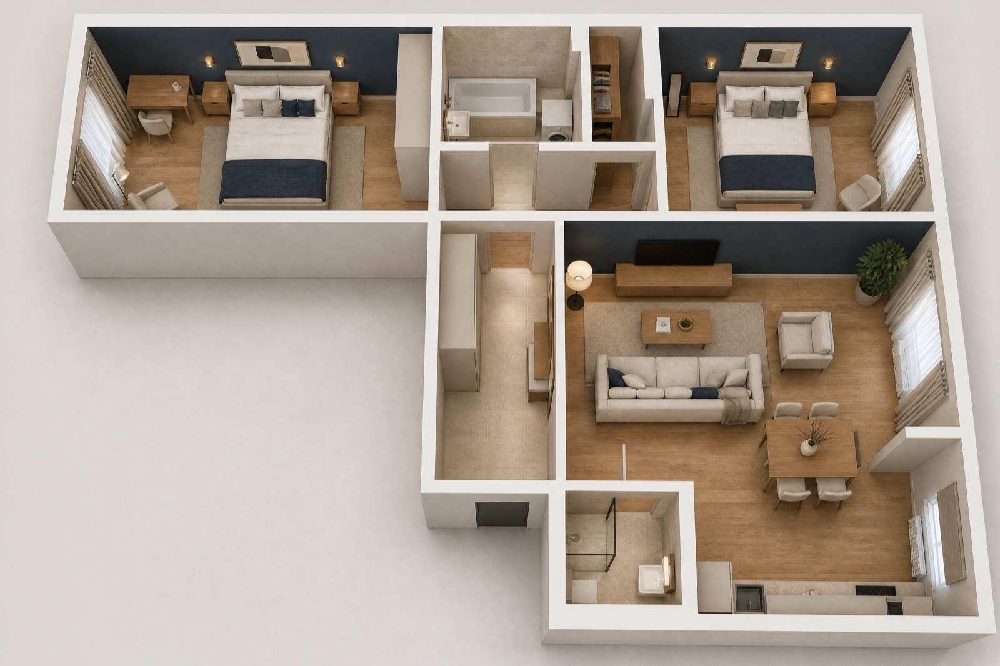
Альбом для заказчика — проект в подаче студии: визуализации стоят перед развёртками своих помещений, у мебели на плане выноски с размерами. Визуализации этого проекта с макетом ещё не сверены — на листах альбома решение точнее, чем на кадрах. Полный альбом — рабочая документация для строителей: все разделы, ведомости и смета. Файлы большие — на мобильном интернете лучше качать по Wi-Fi.
Как оставить правку голосом
Писать письма со списком замечаний не нужно — правка ставится прямо на лист, к нужному месту чертежа.
- Откройте лист
Любой лист ниже или в PDF: в альбоме на каждой странице есть кнопка «Правка к этому листу».
- Нажмите на место
На чертеже появится метка — к ней и относится правка: «диван развернуть к окну», «розетку выше».
- Скажите голосом
Или напишите. Правок к одному листу может быть сколько угодно, есть правка ко всему листу.
- Отправьте одним сообщением
Все метки уходят разом — через «Поделиться» или файлом. Альбом перевыпускается с правками.
Если голосовой ввод в браузере не работает — нажмите микрофон на клавиатуре телефона.
Что значит «проверено»
Блокеров нет
Блокер — то, с чем альбом не выдаётся: проём не помещается в стену, лист вылез за формат, жилая комната без окна. В этом альбоме таких нет.
Открытые вопросы — не брак
Кроме блокеров, проверка оставляет в выпуске вопросы и рекомендации: что уточнить на обмере, где можно лучше, какое допущение принято. Они собраны на листе «Открытые вопросы» в начале альбома — их решают вместе с заказчиком.
До обмера — предварительно
Размеры сняты с плана заказчика. Перед работами нужен контрольный обмер — в альбоме есть готовое задание на него: что именно померить и проверить.
Что в этом альбоме ещё не подтверждено
Комплект предварительный: пометка «не для производства работ» напечатана на 94 из 94 листов, в ней — число открытых пунктов (31). Это 26 открытых вопросов, 5 записей реестра изменений без подписи. 16 вопросов ждут факта — обмера, обследования или документа; задание на контрольный обмер называет 17 закрываемых вопросов реестра. Знак «*» или «**» стоит у значения в чертеже на 60 из 94 листов; расшифровка рядом со знаком есть на 60 из 60 таких листов.
Что внутри альбома
Шифр комплекта ГД-2026-003-АИ. Разделы идут в том же порядке, что в выданном альбоме: титульный лист и общие данные, открытые вопросы и задание на обмер, дальше разделы по специальностям, в конце — развёртки, узлы и смета.
Общие данные
5 листов
Вопросы, задание на обмер и график работ
15 листов
Архитектурные решения
4 листа
Планировочное решение
4 листа
Электрооборудование
8 листов
Отопление и вентиляция
2 листа
Водоснабжение и канализация
3 листа
Освещение
1 лист
Потолки и ГКЛ-конструкции
3 листа
Раскладка плитки
4 листа
Полы и отделка
2 листа
Цвет и материалы
2 листа
Декор и текстиль
5 листов
Встроенная мебель
8 листов
Развёртки стен, узлы и реестры
20 листов
Смета
8 листов
Что решалось на этом объекте
Развёртки строятся от чистовых граней
Вид начинается от чистового угла, длина — между чистовыми гранями отделки: та же формула, что на листах ВК и в раскладке плитки.
Каждая марка отделки с выноской
Марки стоят в кружках на плане и на развёртках, ведомость собрана по форме 1 приложения А ГОСТ 21.501-2018.
Раскладка плитки от точки старта
Подрезки не меньше трети плитки, швы пола продолжаются на стены, положение розеток сверено с сеткой швов.
Такой же альбом на ваш объект
Получение брифа подтверждаем в течение дня. Соседние работы — в портфолио, как устроена проверка — в разделе «Документация».
Общие данные
5 листов. Нажмите на лист — он откроется целиком, и к нему можно надиктовать правку.
Вопросы, задание на обмер и график работ
15 листов. Нажмите на лист — он откроется целиком, и к нему можно надиктовать правку.
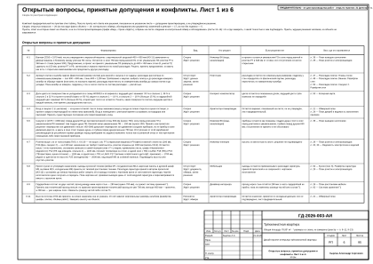
Лист 06Открытые вопросы, принятые допущения и конфликты. Лист 1 из 6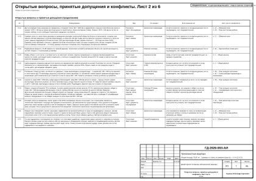
Лист 07Открытые вопросы, принятые допущения и конфликты. Лист 2 из 6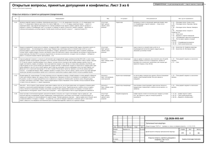
Лист 08Открытые вопросы, принятые допущения и конфликты. Лист 3 из 6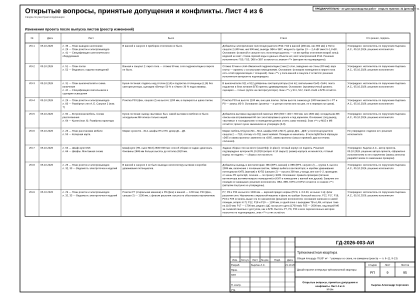
Лист 09Открытые вопросы, принятые допущения и конфликты. Лист 4 из 6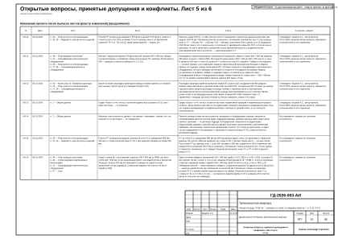
Лист 10Открытые вопросы, принятые допущения и конфликты. Лист 5 из 6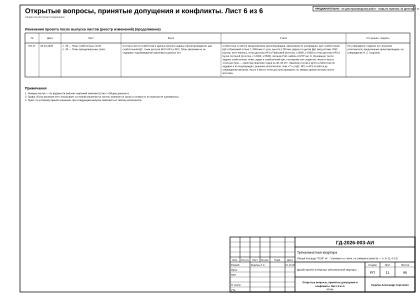
Лист 11Открытые вопросы, принятые допущения и конфликты. Лист 6 из 6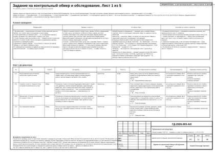
Лист 12Задание на контрольный обмер и обследование. Лист 1 из 5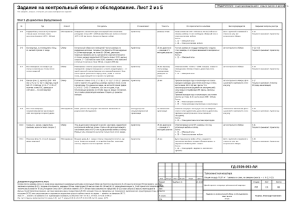
Лист 13Задание на контрольный обмер и обследование. Лист 2 из 5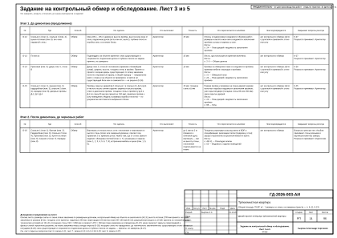
Лист 14Задание на контрольный обмер и обследование. Лист 3 из 5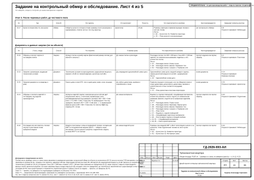
Лист 15Задание на контрольный обмер и обследование. Лист 4 из 5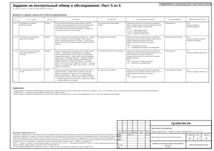
Лист 16Задание на контрольный обмер и обследование. Лист 5 из 5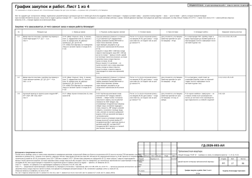
Лист 17График закупок и работ. Лист 1 из 4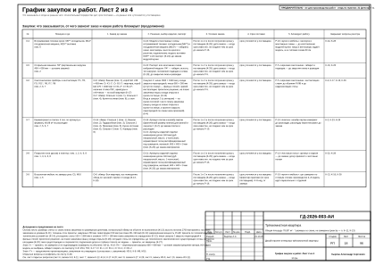
Лист 18График закупок и работ. Лист 2 из 4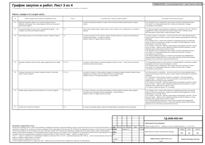
Лист 19График закупок и работ. Лист 3 из 4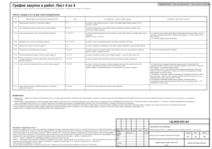
Лист 20График закупок и работ. Лист 4 из 4Архитектурные решения
4 листа. Нажмите на лист — он откроется целиком, и к нему можно надиктовать правку.
Планировочное решение
4 листа. Нажмите на лист — он откроется целиком, и к нему можно надиктовать правку.
Электрооборудование
8 листов. Нажмите на лист — он откроется целиком, и к нему можно надиктовать правку.
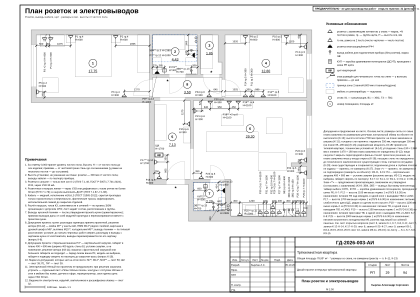
Лист 29План розеток и электровыводов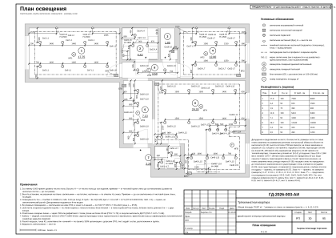
Лист 30План освещения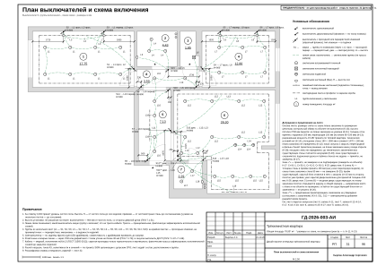
Лист 31План выключателей и схема включения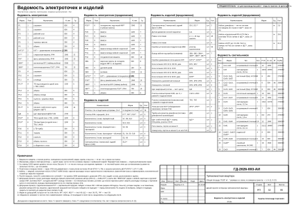
Лист 32Ведомость электроточек и изделий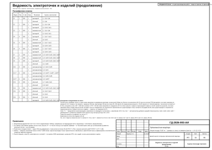
Лист 33Ведомость электроточек и изделий (продолжение)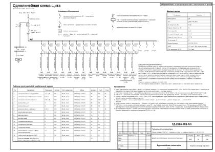
Лист 34Однолинейная схема щита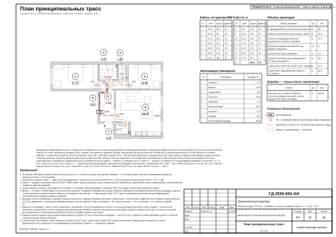
Лист 35План принципиальных трасс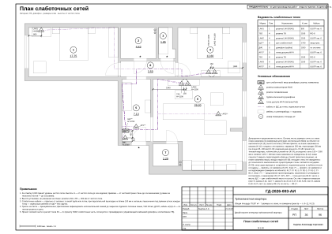
Лист 36План слаботочных сетейОтопление и вентиляция
2 листа. Нажмите на лист — он откроется целиком, и к нему можно надиктовать правку.
Водоснабжение и канализация
3 листа. Нажмите на лист — он откроется целиком, и к нему можно надиктовать правку.
Освещение
1 лист. Нажмите на лист — он откроется целиком, и к нему можно надиктовать правку.
Потолки и ГКЛ-конструкции
3 листа. Нажмите на лист — он откроется целиком, и к нему можно надиктовать правку.
Раскладка плитки
4 листа. Нажмите на лист — он откроется целиком, и к нему можно надиктовать правку.
Полы и отделка
2 листа. Нажмите на лист — он откроется целиком, и к нему можно надиктовать правку.
Цвет и материалы
2 листа. Нажмите на лист — он откроется целиком, и к нему можно надиктовать правку.
Декор и текстиль
5 листов. Нажмите на лист — он откроется целиком, и к нему можно надиктовать правку.


Встроенная мебель
8 листов. Нажмите на лист — он откроется целиком, и к нему можно надиктовать правку.


Развёртки стен, узлы и реестры
20 листов. Нажмите на лист — он откроется целиком, и к нему можно надиктовать правку.


Смета
8 листов. Нажмите на лист — он откроется целиком, и к нему можно надиктовать правку.


Свой проект — с того же места
Бриф — около 10 минут, начать можно с рассказа голосом: размеры, фото, пожелания. Первый вариант проекта квартиры — до 48 часов от получения брифа с планом; предоплаты нет, альбом остаётся у вас в любом случае.
Автор проекта — дизайнер-архитектор Кырлан Александр. В основной надписи листов этих альбомов указана его фамилия; телефона и почты на листах нет — они на странице контактов.